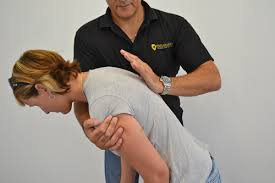

CHOKING TREATMENT
CALL EMERGENCY # if:
- The person is choking.
- The person is unconscious.
If the Person Is Conscious but Not Able to Breathe or Talk:
1. Give Back Blows
- Give up to 5 blows between the shoulder blades with the heel of your hand.
- 
2. If Person Is Still Choking, Do Thrusts
- If the person is not pregnant or too obese, do abdominal thrusts:
- Stand behind the person and wrap your arms around the waist.
- Place your clenched fist just above the person’s navel. Grab your fist with your other hand.
- Quickly pull inward and upward.
- Continue cycles of 5 back blows and 5 abdominal thrusts until the object is coughed up or the person starts to breathe or cough.
- Take the object out of his mouth only if you can see it. Never do a finger sweep unless you can see the object in the person's mouth.
- If the person is obese or pregnant, do high abdominal thrusts:
- Stand behind the person, wrap your arms them, and position your hands at the base of the breast bone.
- Quickly pull inward and upward.
- Repeat until the object is dislodged.
3. Give CPR, if Necessary
- If the obstruction comes out, but the person is not breathing or if the person becomes unconscious:
4. Follow Up
- When emergency medical personnel arrive, they will take over and may do CPR or take the person to the hospital, if needed.